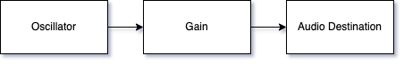

In this lab, I aimed to recreate a bouncing sound through following the guidance of "Designing Sound".
This textbook noted that the bouncing sound was made through frequency oscillation between high and low,
eventually fading off as the oscillations continues. This makes senses from a physical perspective, where the
object hits the ground with decreasing force, creating less and less interference on the nearby airwaves
as its momentum subsides. I replicated this through manually modifying the frequency of the oscillator following
the trajectory of an object's bouncing. Through repeating this sound I was able to micmic the sound of repeatedly
bouncing a ball. I continuously modified the parameters of each frequency until the sound
was most similar.
